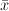
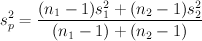

This utility performs calculations for testing claims about the difference of two population means from two independent samples. The null hypothesis of a claim about the difference of two population means μ1 and μ2 is μ1 = μ2. The alternative hypothesis can be one of the following: μ1 < μ2, μ1 > μ2, or μ1 ≠ μ2.
If population standard deviations σ1 and σ2 are unknown and are assumed to be unequal, the test statistics t is given by:
where  is the sample mean, μ is the hypothesized population mean, s is the sample standard deviation, and n is the sample size. The degree of freedom is given by
where A = s12 / n1 and B = s22 / n2.
If population standard deviations σ1 and σ2 are unknown and are assumed to be equal, the test statistics t is given by:
where .
If population standard deviations σ1 and σ2 are known, the test statistics z is given by:
The null and alternative hypotheses, degrees of freedom (DOF), critical value(s), test statistic, and p-Value are displayed in the outputs.
The sample data can be provided in one of three ways:
If population standard deviations are known, check the appropriate check box and provide the standard deviations.
Check the Assume population variances are equal check box if the population variances are assumed equal.
The Significance Level or Confidence Level must be between 0 and 1. For example, enter 0.95 for a 95% confidence level.
The Alternative Hypothesis can be one of the following forms: Less than (μ1 < μ2), Not Equal to (μ1 ≠ μ2), or Greater than (μ1 > μ2). Enter the Hypothesized Mean (μ1 - μ2) in the provided text box.